Слюдянский берег Байкала, мыс Шаманка
(15 августа 2007)
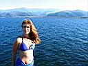 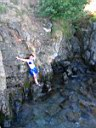 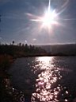 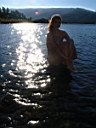 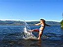
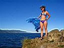 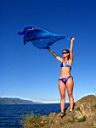 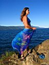 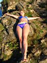 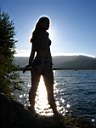 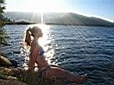
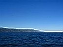 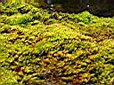 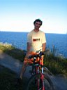 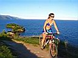 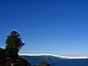
Небольшая вечерняя велопрогулка на Шаманку.
Юля впервые в Слюдянке, так что мы смотрим местные достопримечательности, купаемся и всё везде фотографируем. Юля это дело любит, да и я красивых девушек всегда рад увековечить в цифре :) Да еще и на природе, это же классика жанра!
Вот только старенький Canon А75 уже доживает свои деньки и достает своими фокусами с автофокусом :) Прикольные скалы на Шаманке - так и манят прыгнуть с них в темную глубину Байкала. Но я пока не решился. Надо бы поплавать под ними с маской, присмотреться :) Вода сейчас в Байкале наитеплейшая!
Август 2007
Алексей Белокрылов
|